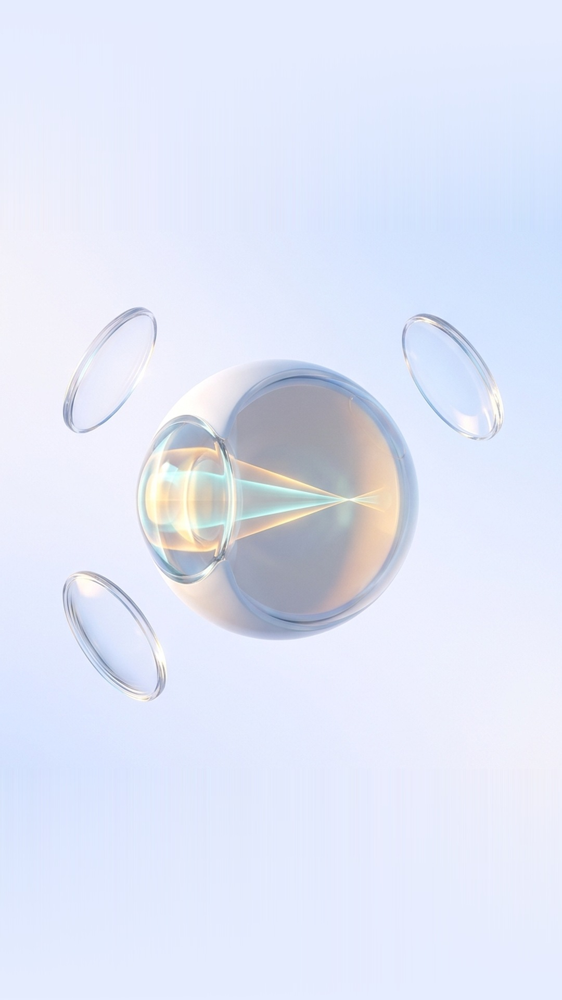
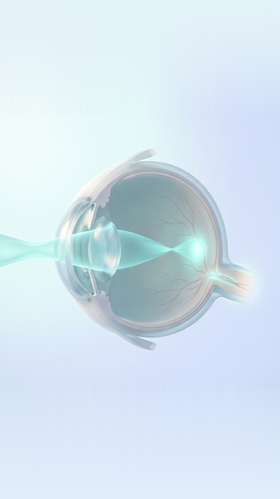
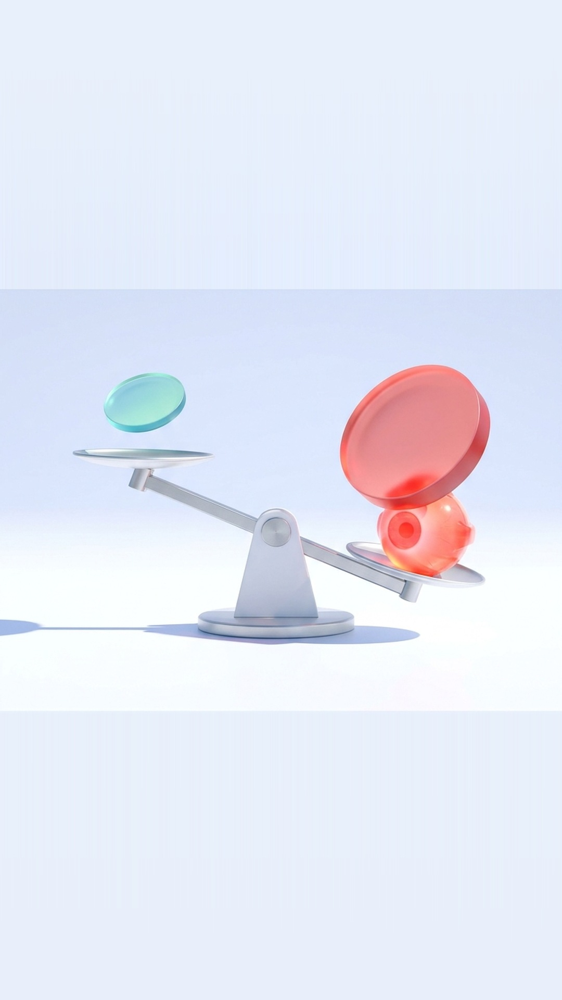
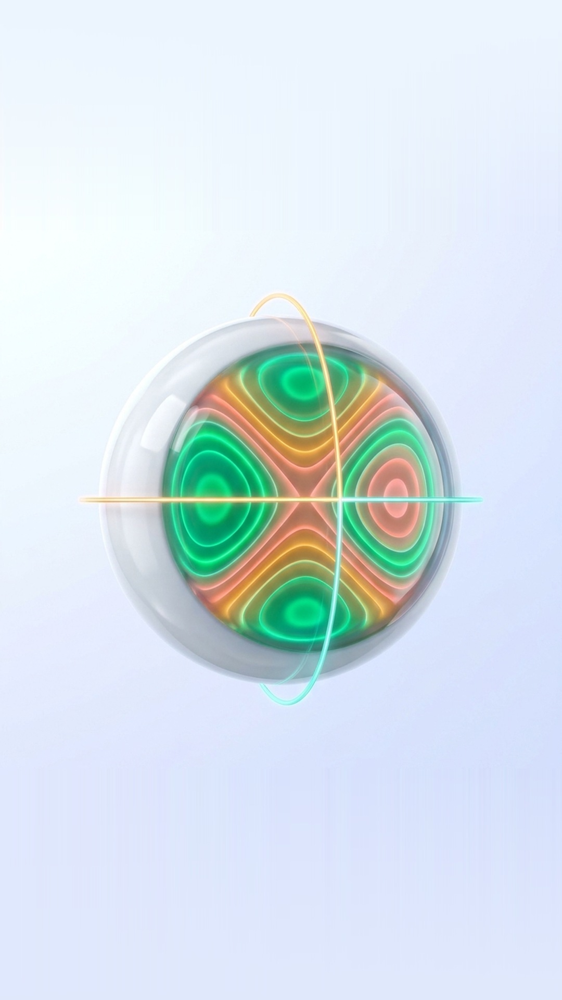
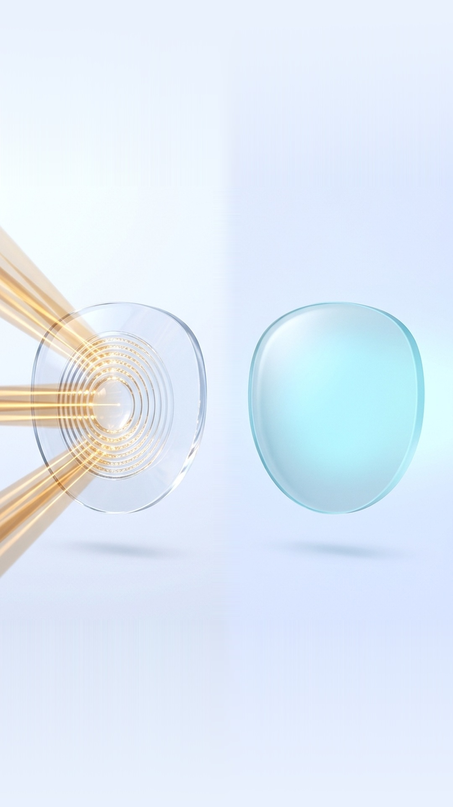
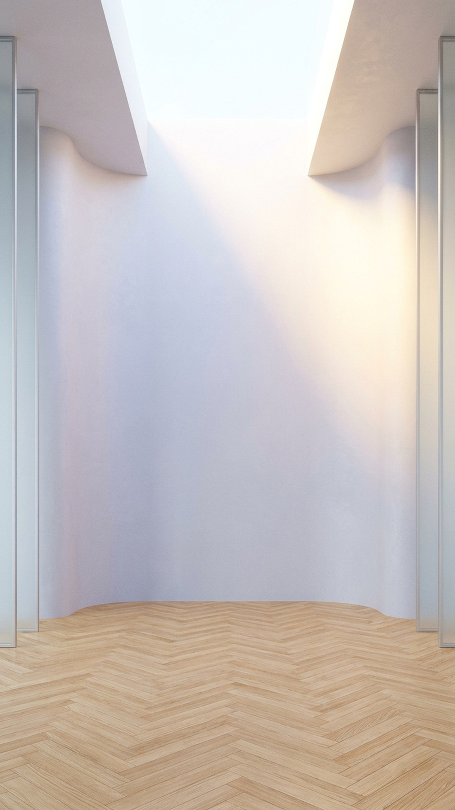

KAKA VISION LAB · 高曲率选镜指南
EP.16 · HIGH-K OPTICS
01 · HIGH CORNEAL CURVATURE (K > 44D)
角膜曲率高，怎么选防控眼镜？
真的所有眼镜都能“随便选”吗？
真的所有眼镜都能“随便选”吗？
曲率高焦点落得近、眼轴较稳，但选错照样踩坑！
OPTICAL REALITY · 曲率高选镜真相
并非随便选都行！需重点盯防「离焦量 · 散光 · 视功能」
还真不是！
● 角膜曲率陡 ➔ 屈光力强
● 焦点落得近 ➔ 眼轴相对稳
02 · GENTLE DEFOCUS MECHANISM
焦点本来就近，无需猛药强拉
只需“轻轻拉一下”，低离焦就管用！
只需“轻轻拉一下”，低离焦就管用！
GENTLE MYOPIC DEFOCUS · 轻柔离焦牵引
部分孩子甚至无需额外离焦 · 低离焦量即可轻松稳住眼轴
低离焦管用 ✔
PITFALL 01 · 离焦量过载警告
44~45D 曲率：配 ~350 离焦即够
盲选 500~800 + 视功能差反而失控！
盲选 500~800 + 视功能差反而失控！
OPTIMAL MATCH · 舒适匹配区
~350 离焦量
轻柔达标 · 视觉负担小
OVERLOAD RISK · 离焦过载区
500 ~ 800 高离焦
若视功能差 ➔ 负担过重控不住
44~45D 与 46~47D 均需警惕：离焦量过高 = 视觉负担过重！
PITFALL 02 · 高曲率伴高角膜散光
曲率高 + 角膜散光也高？
需提前考虑「散光暴露」问题
需提前考虑「散光暴露」问题
注：角膜散光无论配不配镜，后期都有自然暴露的可能
CORNEAL ASTIGMATISM · 角膜散光地形特征
K1 与 K2 正交子午线曲率差大 · 潜藏散光释放压力
重点关注 ΔK
05 · PATHWAY SELECTION
担心角膜散光过早暴露出来？
可优先考虑「非离焦类」防控眼镜
可优先考虑「非离焦类」防控眼镜
PATH A · 微透镜离焦眼镜
散光可能提前暴露
周边微透镜屈光变化或加速潜伏散光显现
PATH B · 非离焦类防控镜
散光过渡更平缓
担心散光暴露过早时，可不选离焦类方案
PITFALL 03 · 决胜底盘仍是视功能
为什么有些孩子明明曲率高很好控
度数却还是一直往上涨？
度数却还是一直往上涨？
要素 01
高曲率优势
配适度低离焦 ✔
要素 02
高角膜散光
防提前暴露 ✔
要素 03
视功能底盘
严禁高离焦过载 ✔
ROOT CAUSE · 好底子却涨度数的真凶
「视功能太差」+「离焦量又选得太高」
= 视觉负担过重，好牌也会打烂！
= 视觉负担过重，好牌也会打烂！
KAKA VISION LAB
关注卡卡老师
把高曲率的好底子，变成稳度数的真优势
LEAVE YOUR DATA · 评论区精准把关
评论区发一下孩子的 角膜曲率 + 散光数值
卡卡老师帮你搭配稳妥方案！
卡卡老师帮你搭配稳妥方案！
卡卡老师 · 视光小课堂
卡卡老师 · 视光小课堂
卡卡讲解中